Practica 8: Simulink
Para un panorama general de saber que es SIMULINK revise el siguiente video
En particular nos concentraremos en simular solución de ecuaciones diferenciales. Para activar Simulink podemos hacerlo por lo menos de dos maneras, con comando
o dando click en el icono ubicado en la pestaña de HOME
Dependiendo de la versión que se utilice podría o no aparecer la siguiente ventana. En caso de que aprezca seleccionamos la opción de Blank Model
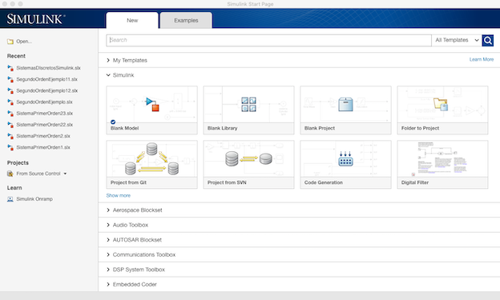
de ser necesario seleccionamos el icono mostrado para que aparezca la Simulink Library Browser
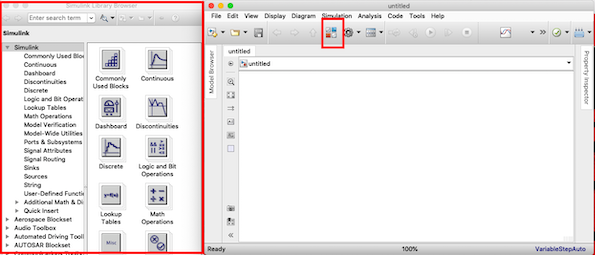
Ahora se presentan algunos ejemplos utilizando simulink, estos videos serán un apoyo para realizar la práctica, podría tambien revisar el video de forma completa con la finalidad de entender en su totalidad la simulación que se esta implementando.
Primer orden  , la condición inicial se agrega en el bloque de integración dando doble clic
, la condición inicial se agrega en el bloque de integración dando doble clic
Primer orden 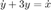
Segundo Orden 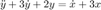
< Sistemas de Ecuaciones>
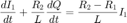
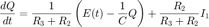
Contents
Entregables
Se revisa una publicación (html) de la práctica. En este caso tendra que iniciar indicando el nombre de la práctica y sus datos personales, puede realizarse en equipos (Portada). El índice del contenido lo genera Publish (índice). Los objetivos son los sigueintes:
- Conocer Simulink
- Implementar simulaciones de ecuaciones diferenciales en Simulink
No es necesario presentar introducción
Para el desarrollo se tienen que resolver cada uno de los siguientes problemas comenzando una nueva sección (para la publicación) en cada uno de ellos.
1. Para las siguientes ecuaciones obtenga

a) La solución analítica mediante transformada de laplace, puede ayudarse de programas previos
b) La gráfica de la solución analítica, puede presentar diferentes intervalos en la grafica y acercamientos a la gráfica según considere necesario.
c) El diagrama de la para Simulink, indicando en caso de que no sea claro, el valor de cada parámetro en Simulink, por ejemplo, reportar las condiciones Iniciales de simulación ya que no son visibles a simple vista desde el esquema inplementado.
d) La grafica de la solución en Simulink, puede presentar diferentes intervalos en la grafica y acercamientos a la gráfica según considere necesario.
e) La gráfica, en la misma figura, de la Simulación y la solución analítica.
f) En caso de que la entrada sea una función senoidal:
i) Encuentre el escalamiento y desfasamiento de la respuesta en estado estacionario a partir de la evaluación de la función de transferencia (solución analítica).
ii) Encuentre el escalamiento y desfasamiento de la respuesta forzada a partir de las gráficas de Bode generadas en Matlab (solución numérica).
iii) Verifique que concuerde la solución analítica y la solución numérica
2. Un péndulo doble oscila en un plano vertical bajo la acción de la gravedad. Para desplazamientos pequeños 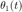 y 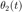, es posible demostrar que las ecuaciones diferenciales del movimiento son:
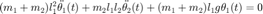
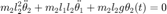
donde , , 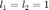, 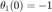, 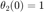, 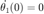 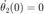.

a) Realiza la solución símbolica como en el siguiente documento , y gráfica las soluciones
b) Implementa las simulación en Simulink, reporta las gráficas de las soluciones
c) Reporta las gráficas de las soluciones, numérica y simbólica en la misma figura, una para cada solución.
3. En el siguiente enlace puede encontrar varias aplicaciones desarrolladas en Simulink, elija una de estas aplicaciones, explique el problema y la implementación y reproduzca los resultados, debe tomar en cuenta que algunas aplicaciones requieren una investigación para poder enterlas de forma completa, no es necesario que elija la aplicación mas avanzada, el objetivo de este problema es que conozca algunas de las aplicaciones que se pueden desarrollar. Podría ser que algunos ejemplos del enlace no necesariamente enten enfocados a Simulink, para este punto es necesario que la aplicación elegida este desarrolada en Simulink.
Nota 1: El esquema implementado en simulink puede ser también una realización especifica (serie, palalelo, canónica, etc), se ha decidido exponer un esquema que no hace referencia a una realización especifica
Nota 2: Existen varias maneras de realizar la simulación en Simulink, la variedad es amplia, no se debe pensar que lo implementado en esta practica es la única manera de realizar una simulación en Simulink.
Nota 3: En Simulink puede observar muchas más herramientas que las utilizadas en esta práctica, se pueden observar bloques diseñados para diferentes ciencias.
Nota 4: Recordar que cada Bloque en Simulink va mas alla, al final cada una de las simulaciones es la implementación de métodos numéricos.
No es necesario incluir conclusiones en esta práctica, si lo considera necesario puede incluir apéndices, no olvide incluir sus referencias.
El código de esta practica se encuentra en el siguiente enlace